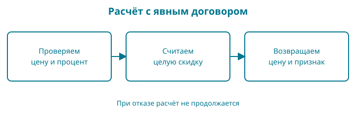

5. Правило цены и первый тест
Цена из главы 3 пока только выводилась на экран. Добавим скидку. Мы хотим один раз записать правило расчёта и вызывать его из разных мест, а не копировать арифметику по всему магазину.
Контрольная точка: examples/05-functions. Для этой главы нужны условия, целочисленное деление и понимание переменной. Структуры и коллекции пока не требуются.
Набираете сами: подготовьте отдельную папку с вашим go.mod, main.go ниже и main_test.go из раздела о первом тесте. В готовой контрольной точке main_test.go уже существует: добавляйте новый тест туда, не дублируя имена функций.
Образ: карточка расчёта
Представьте карточку кассира с двумя пустыми местами: «цена» и «скидка». Ниже записаны шаги расчёта, а внизу оставлено место для результата. Карточку можно применить к разным книгам; переписывать правило каждый раз не требуется.
У нашей функции два входных значения — параметры. Из вызова в неё поступают аргументы: конкретная цена и конкретный процент. Функция возвращает новую цену и признак того, что исходные данные допустимы. Если процент больше ста, нельзя молча заполнить нижнюю строку случайным числом и назвать расчёт удачным.
Опора: два входа — проверка — два выхода. Это описание именно нашей функции. Вообще функция Go может иметь другое число параметров и результатов, а некоторые функции меняют внешнее состояние. Не всякая функция похожа на спокойный расчёт по карточке. Сейчас нам удобно начать с правила, которое легко проверить отдельно. Закройте код и пройдите по карточке с ценой 100 и скидкой 10: что окажется на каждом выходе?
Сначала договоримся о результате
Наше учебное правило принимает цену в минимальных денежных единицах и целый процент скидки. Цена допустима от 0 до 100000000, процент — от 0 до 100, обе границы включены. Ограничение цены выбрано для упражнения и безопасного расчёта, а не как универсальный предел торговли.
Мы сначала считаем размер скидки. Если получается дробная минимальная единица, отбрасываем дробную часть скидки. Например, 10% от 105 — это 10.5; скидка будет 10, а покупатель заплатит 95. Это конкретное правило округления в пользу продавца. Другой магазин может выбрать другое, но обязан описать и проверить его.
При недопустимых аргументах функция возвращает признак отказа. Возвращаемое число в этом случае нельзя использовать как цену.
Сразу целиком
Файл main.go:
package main
import "fmt"
// priceAfterDiscount принимает цену в минимальных денежных единицах.
// Допустимая цена: от 0 до 100000000 включительно; скидка: от 0 до 100.
// Дробную минимальную единицу в скидке отбрасываем в пользу продавца.
func priceAfterDiscount(priceMinor int64, percent int64) (int64, bool) {
if priceMinor < 0 || priceMinor > 100000000 {
return 0, false
}
if percent < 0 || percent > 100 {
return 0, false
}
discountMinor := priceMinor * percent / 100
return priceMinor - discountMinor, true
}
func main() {
priceMinor, ok := priceAfterDiscount(249900, 10)
if !ok {
fmt.Println("Неверная цена или скидка")
return
}
fmt.Println("К оплате:", priceMinor, "минимальных единиц KZT")
}
Запустите go run .:
К оплате: 224910 минимальных единиц KZT
Две величины на выходе помогают различить бесплатную книгу и ошибку. Для допустимой нулевой цены получим (0, true), для недопустимой — (0, false).
Параметры и аргументы
В объявлении функции priceMinor и percent — параметры: имена для входных значений. В вызове priceAfterDiscount(249900, 10) числа — аргументы, переданные этим параметрам.
Функция не печатает ответ. Она возвращает его вызывающему коду. Благодаря этому одно правило можно будет использовать в терминале, HTTP-обработчике и тесте без захвата вывода с экрана.
(int64, bool) после списка параметров описывает два возвращаемых значения. return 0, false немедленно завершает вызов. Если проверки прошли, вычисляется скидка и возвращаются цена и true.
В строке priceMinor, ok := ... оба результата получают имена. ok — привычное имя для признака успеха. Сначала проверяем его и только потом используем цену. Позже, когда потребуется объяснить разные причины отказа, заменим логический признак на значение error.
Область видимости параметра ограничена функцией. Имя priceMinor в main — другая переменная, хотя написано одинаково. Передача целого числа копирует его значение; функция не изменяет переменную вызывающего кода.
Почему проверки стоят до умножения
Операторы || соединяют условия значением «или». Цена не подходит, если она меньше нуля или превышает верхнюю границу. Процент проверяется отдельно.
Максимальное произведение в нашем договоре — 100000000 * 100, то есть 10000000000. Оно помещается в int64. Произвольную большую цену мы не умножаем: функция откажет раньше.
Переставить проверку после вычисления опасно. Если арифметика уже переполнилась, проверка искажённого результата не восстановит исходный смысл. Ограничения полезны только тогда, когда реально охватывают путь вычисления.
Проверка, которая остаётся
Создайте рядом main_test.go. Минимальный первый тест выглядит так:
package main
import "testing"
func TestPriceAfterDiscount(t *testing.T) {
got, ok := priceAfterDiscount(249900, 10)
if !ok || got != 224910 {
t.Fatalf("получили (%d, %t), хотели (224910, true)", got, ok)
}
}
go test собирает и запускает проверки из файлов _test.go. Аргумент ./... выбирает пакеты в текущей папке и её вложенных папках внутри этого модуля: ./ — относительный путь, ... — шаблон инструмента Go. Три точки здесь надо набрать; это не пропущенный текст. Пока пакет один, но та же команда сохранится после разделения проекта. Выполняйте её из папки с go.mod:
go test ./...
В успешном отчёте будет строка ok с именем модуля. FAIL означает провал проверки или сборки; сначала прочитайте сообщение над ним. [no test files] означает отсутствие тестов, а не проверенный результат. Обычный go run . выполняет функцию main, но не запускает TestPriceAfterDiscount; поэтому нужны обе команды.
Время и отметка кеша могут различаться. (cached) означает повторное использование подходящего успешного результата. Для принудительного повторного выполнения используется go test -count=1 ./...: -count=1 просит выполнить тесты один раз заново.
Имя файла заканчивается на _test.go: инструмент Go включает такие файлы при тестировании. TestPriceAfterDiscount начинается с Test, а параметр t *testing.T даёт тесту способы сообщить о провале. Пока используйте эту сигнатуру как договор инструмента; указатель и методы разберём отдельно. Звёздочка здесь не участвует в формуле скидки.
got означает полученный результат. Условие проверяет и число, и признак успеха. t.Fatalf помечает тест неуспешным, печатает сообщение и прекращает этот тест. t.Fatal тоже прекращает тест, но принимает готовые значения без строки формата; суффикс f у Fatalf указывает на форматирование. %d выводит число, %t — логическое значение. В сообщении указано и полученное, и ожидаемое: это помогает разбирать ошибку.
Убедитесь, что тест умеет падать
В функции замените priceMinor - discountMinor на priceMinor + discountMinor. Это правдоподобная ошибка знака: скидка увеличит цену. Запустите тест и найдите сообщение о несовпадении.
Верните минус и снова выполните тест. Один успешный запуск полезен только вместе с пониманием того, какую ошибку проверка действительно замечает.
Не вычисляйте ожидаемый результат в тесте той же формулой, которую проверяете. Иначе опечатка может переехать в обе половины, и сравнение подтвердит их общую ошибку.
Края важнее одного удачного числа
| Цена | Скидка | Результат | Успех |
|---|---|---|---|
| 249900 | 0 | 249900 | true |
| 249900 | 100 | 0 | true |
| 105 | 10 | 95 | true |
| 0 | 10 | 0 | true |
| -1 | 10 | не использовать | false |
| 100 | 101 | не использовать | false |
В полной контрольной точке есть также проверки отрицательной скидки, предельной цены и цены на единицу выше предела. Тесты не доказывают правильность для всех мыслимых программ, но сохраняют важные примеры нашего договора.
Читаем функцию и тест по символам
| Запись | Как прочитать |
|---|---|
// |
Однострочный комментарий: текст до конца строки не исполняется |
(priceMinor int64, percent int64) |
Два параметра; после каждого имени указан его тип |
(int64, bool) после параметров |
Два возвращаемых значения, в этом порядке |
return |
Завершить функцию и передать результаты вызывающему коду |
|| |
Логическое «или»: достаточно истинности одного условия |
*, - в формуле |
Умножение и вычитание |
!= в тесте |
Не равно |
_ вместо имени результата |
Пустой идентификатор: этот результат сознательно не используем |
t *testing.T |
Параметр t содержит указатель на объект тестирования типа T из пакета testing |
t.Fatalf |
Вызов метода объекта тестирования через точку |
Звёздочка между числами означает умножение. Звёздочка перед типом testing.T означает тип указателя: значение, через которое тест обращается к своему объекту отчёта. Это разные грамматические места. Объект создаёт тестовый инструмент; руками выделять его сейчас не нужно. В главе 8 вы сами создадите значение и проверите, как адрес помогает сохранить изменение.
В if !ok || got != 224910 сначала читаем «успеха нет» и «число не совпало», затем соединяем через «или». Логическое || вычисляет правую часть только если левая ложна. При вычислении арифметики умножение и деление имеют приоритет перед вычитанием; операции одного такого приоритета группируются слева направо. Скобки позволяют явно изменить группировку.
%t в сообщении выводит логическое значение, \n внутри строки задаёт перевод строки. Комментарий описывает договор, но компилятор не доказывает, что код ему соответствует: для этого мы пишем проверки.

Проверка понимания. Назовите два разных значения * в этой главе и покажите место, где ошибка прекращает вычисление до умножения.
Разминка
Предскажите. Что вернёт priceAfterDiscount(105, 100)?
Заполните. После получения price, ok можно ли печатать цену до проверки ok?
Почините. Тест проверяет только, что цена равна нулю. Почему он не отличит бесплатную книгу от отказа?
Задание
Обязательное. Напишите тест TestSmallDiscount: цена 105, скидка 1; ожидаются 104 и true. Сначала вычислите результат на бумаге, затем запустите тест. Не меняйте функцию, чтобы подогнать её под ошибочное ожидание.
На своих данных. Выберите цену и процент, при которых размер скидки получается дробным. Объясните итог по нашему правилу округления.
По желанию. Измените правило: округляйте размер скидки вверх до целой минимальной единицы. Сначала сформулируйте новые ожидания для 105 и 10%, затем измените отдельную копию функции и тесты. Основную контрольную точку сохраните с прежним договором.
Ответы
При стопроцентной скидке на допустимую цену получим (0, true). До проверки ok число не следует считать ценой. В тесте бесплатной книги надо проверить и ноль, и признак успеха.
Для обязательного задания скидка равна 105 * 1 / 100, то есть 1, а итог — 104. По форме тест похож на первый: меняются аргументы, ожидаемое число и имя.
Теперь в проекте есть самостоятельное правило и автоматическая проверка. В следующей главе займёмся названием книги: выясним, почему длина строки в байтах не равна числу видимых букв.